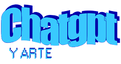
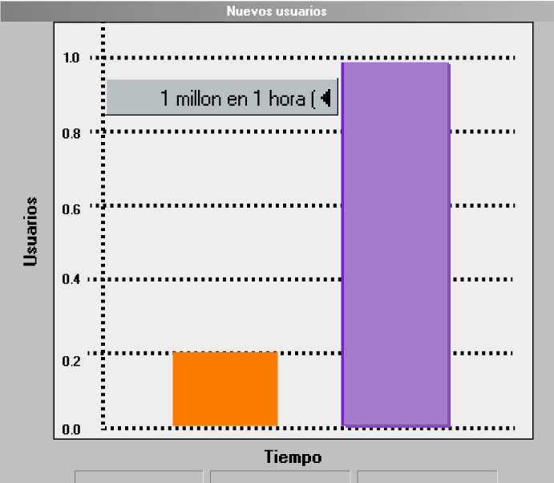
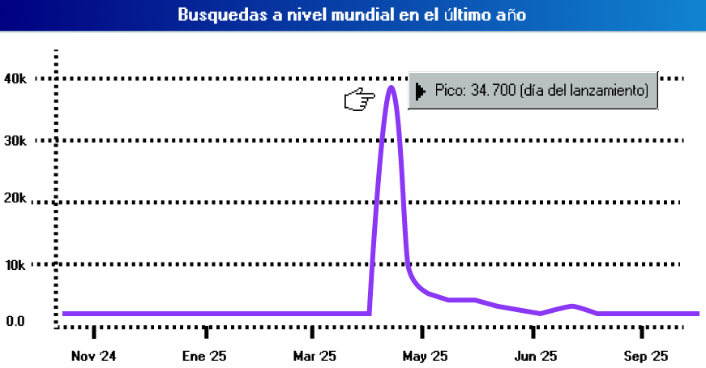
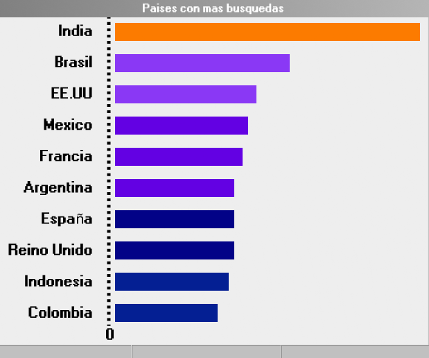
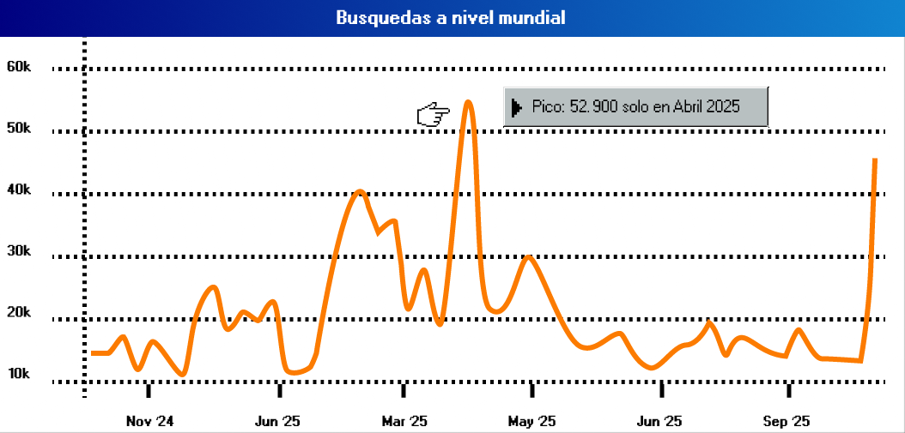

Chat GPT y Arte
Chat GPT y Arte

Cómo ChatGPT explotó
en una hora

Al liberar la función de generación de imágenes estilo Ghibli para usuarios gratuitos. Chat GPT sumó 1 millon de usuarios en solo 1 hora.
📘 (Antes alcanzado en 5 dias.)
Rápidamente, el interés público por la herramienta y su accesibilidad (ademas de la viralidad) incrementaron las busquedas en google:
🔍 Total (en el ultimo año): 83.700


Ranking global de búsquedas de ''Chat GPT Ghibli'' ¿Qué paises se interesaron más por estas imagenes artificiales? 🗺️
Luego de este suceso el arte artificial empezó a ser motivo de interés del publico general:
Total de busquedas (en el ultimo año):
83.700 🔍

Juan Perez: Creo que el crédito debería ser para la persona que escribió el prompt, porque es quien decide qué se quiere expresar y guía la creación.
M4rtina: Pienso que quien desarrolló la IA merece el reconocimiento, ya que sin su trabajo no existiría la herramienta que genera la imagen.
Pablo: Sería justo dividir el mérito: el programador por crear la IA y el usuario por dirigirla con su idea o prompt.
Lucas: No creo que la IA pueda ser considerada autora. La creación es el resultado de decisiones humanas, aunque sean indirectas.